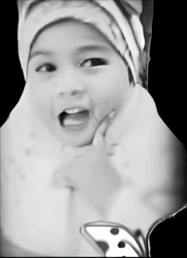
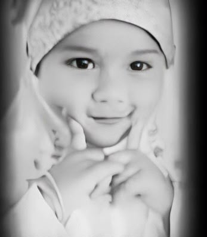
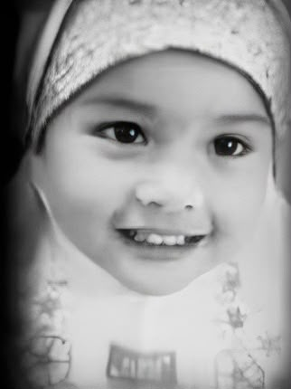
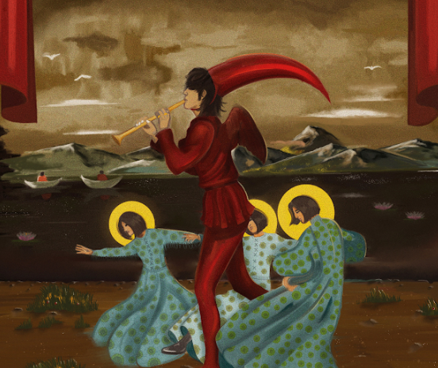

Selalu indah kaya bunga matahari, tapi bunga matahari disini jelek gambarnya hehe.
ada surat nich..
Dear Ulina,
yang artinya cantik atau main - main hehe....
Thank you for being such a wonderful and strong person. Semoga kedepannya ulina have a good day and meet good people serta semoga senyummu selalu seindah matahari :). Sepertinya banyak kata yang harus aku ketik di sini, but words wouldn’t be enough if I tried to say everything to you.
Hopefully this website bisa jadi penghibur kamu yaww... ntar aku update kalau lagi ada waktu dan ide yaa
Warm regards from afar,
cevin pratama sundora.
"Semoga hal - hal baik selalu menyertaimu"

Romantic Echoes